Original / truth / probability / cutout. Review gallery_tags.csv for category coverage and multi-animal annotation notes.
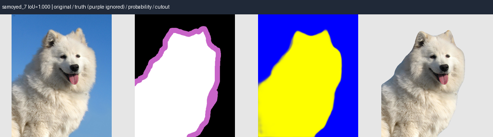
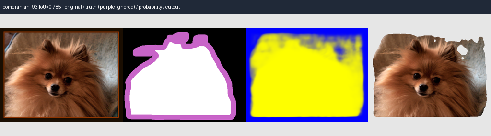
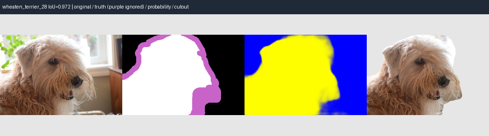
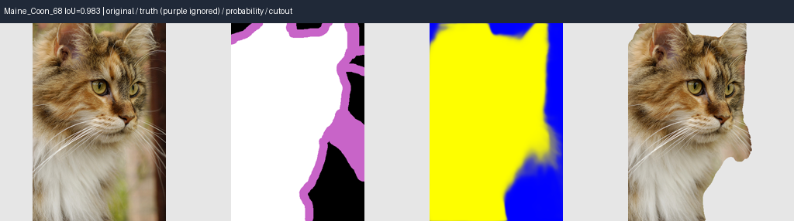
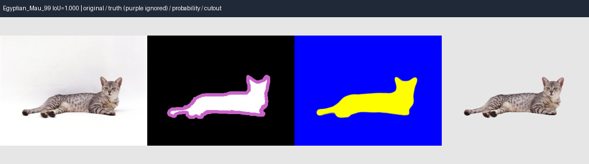
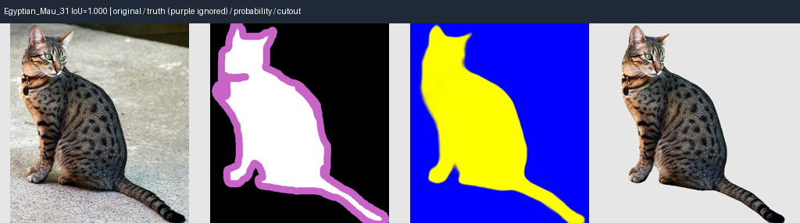
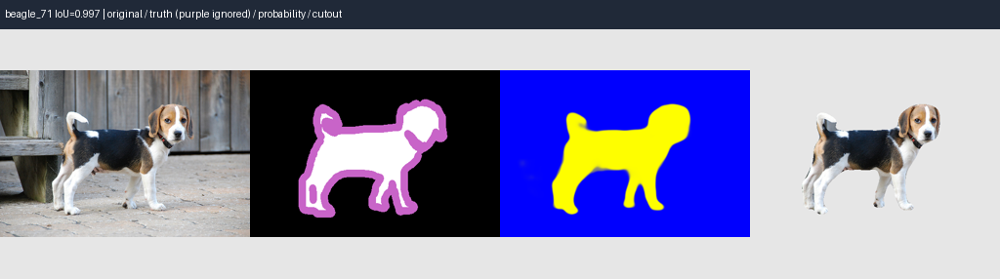
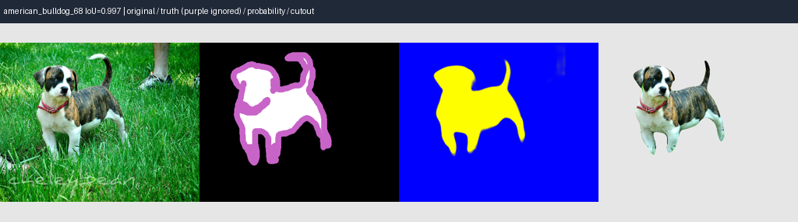
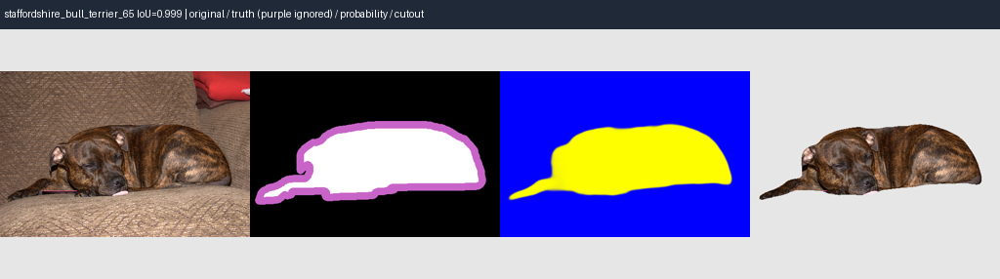
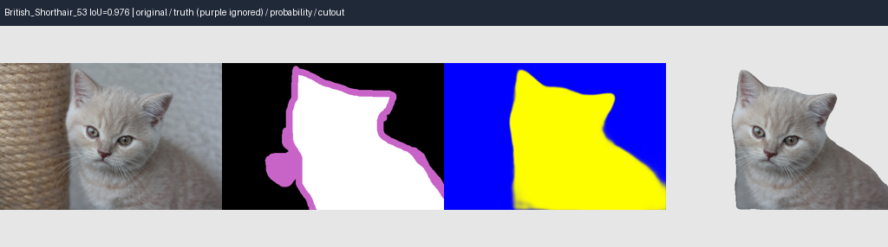
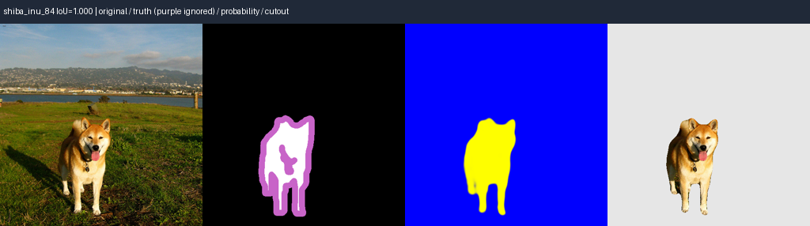
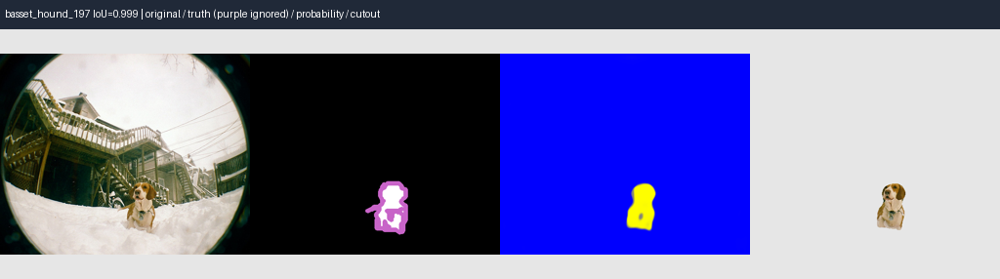
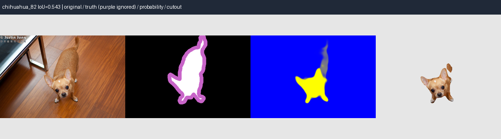
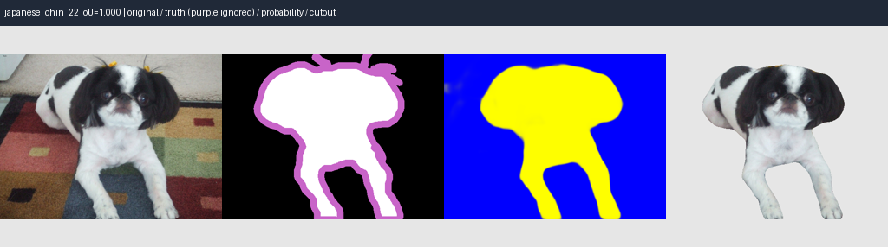
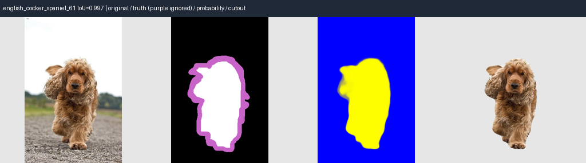
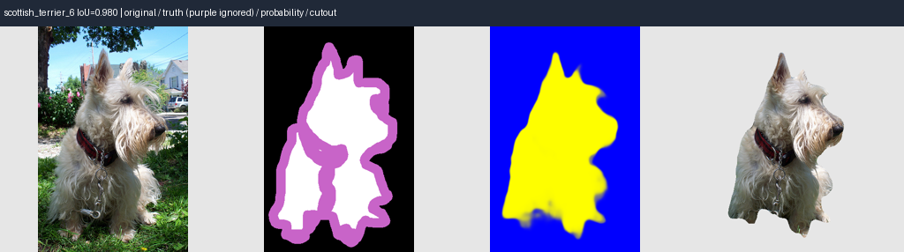
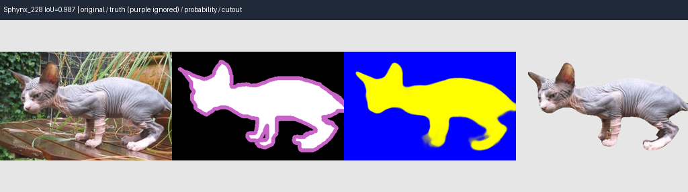
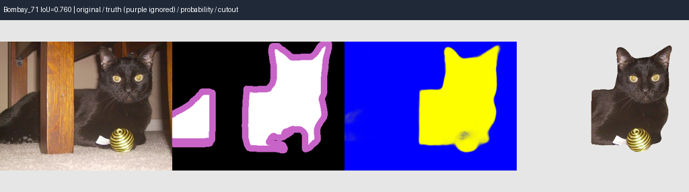
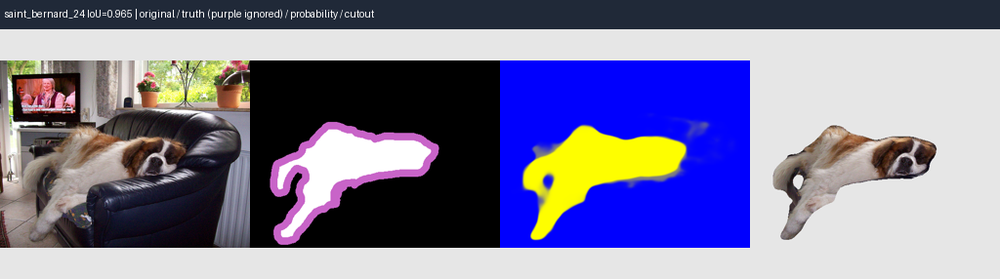
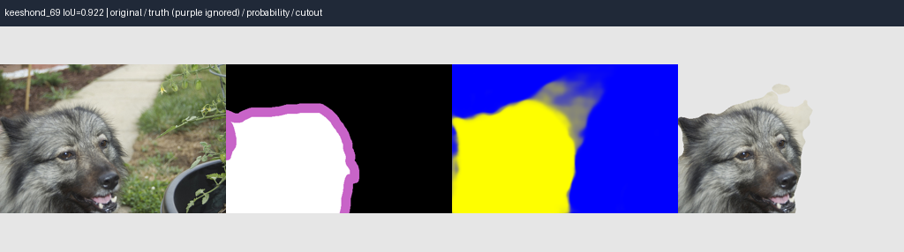
Oxford-IIIT Pet: Parkhi, Vedaldi, Zisserman and Jawahar, Cats and Dogs, CVPR 2012. Original image owners retain copyright. Derived panels: resize, masks and cutouts. Dataset source and terms; CC BY-SA 4.0.